Outside, noise. Inside, one moment.
SCROLL
An emotional support assistant for smart glasses. When panic hits before an interview or an exam, MOMO guides graduating students through breathing and sensory grounding inside the lens, without taking out a phone.
- Event
- IX HACK 2026 · IDA entry
- Team
- Team 1
- Platform
- Meta Ray-Ban Display · Neural Band
- Category
- Wearables · Interaction design
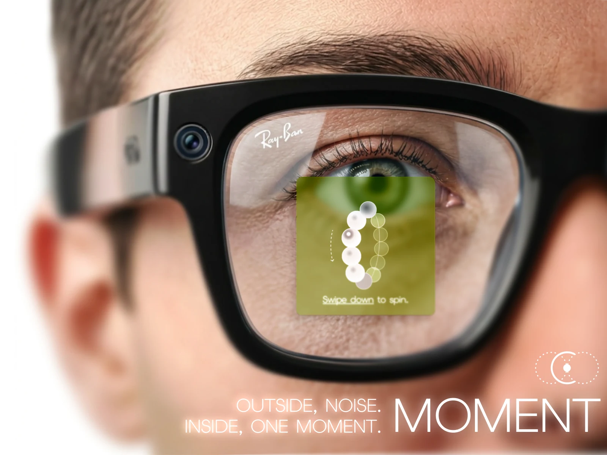
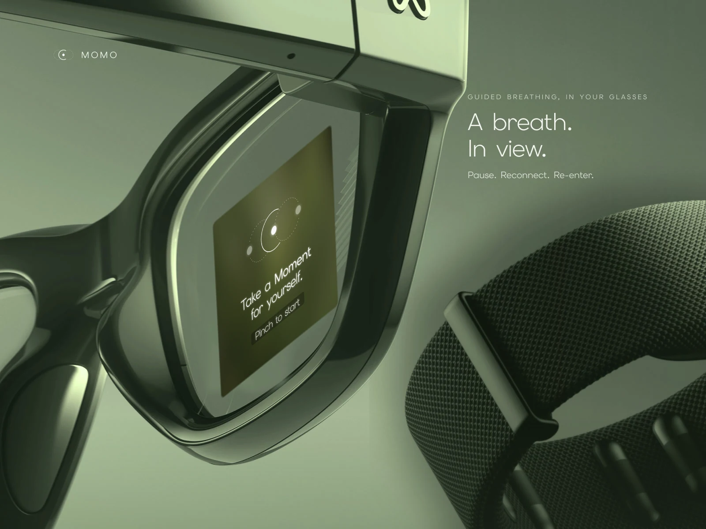
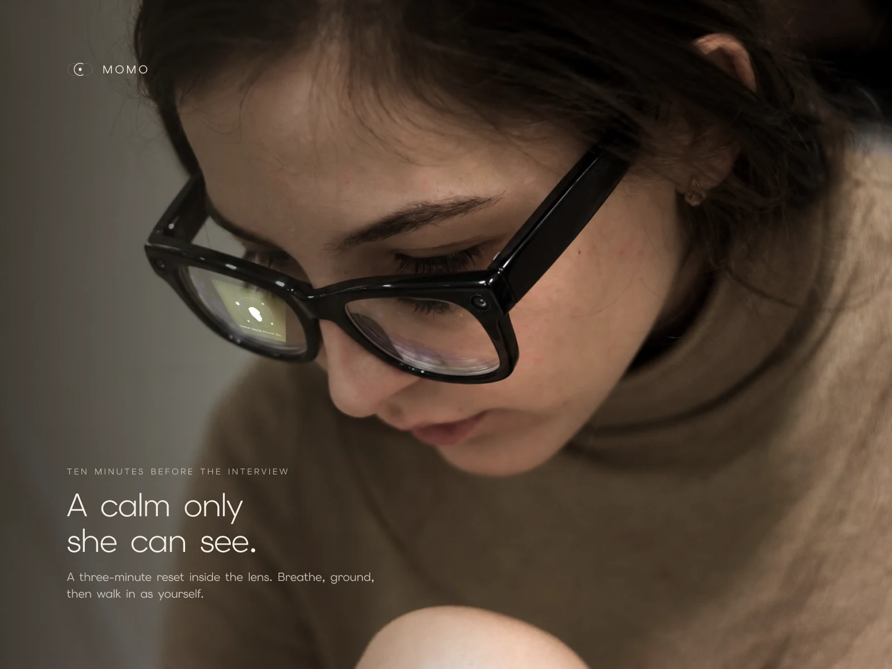
My role
One of Team 1’s designers, working across the whole sprint: from the research behind the problem, to the gesture flow in the lens, to the IDA boards and the film.
- Research
- Interaction & UI design
- Visual boards
- Video & motion
The problem
Panic happens fast.
Support should be faster.
college students have had at least one unexpected panic attack.
Telch et al., 1989 · n = 2,375the risk of a panic disorder diagnosis in autistic adults.
Nimmo-Smith et al., 2020How could support be easier to reach in exactly that moment?
Emotional journey
Pause, reconnect, re-enter.
Instead of asking a panicking student to make choices, Moment follows the body back up, one sensory step at a time.
- Panic
Mind goes blank
Ten minutes before the interview, rehearsing turns into a racing heart.
- Pause · 01–05
Slow the body first
Sit down and breathe, paced by a ring in the lens.
- Reconnect · 06–10
Anchor in the room
Touch, one real object, then sound pull attention out of the spiral.
- Re-enter · 11–12
Walk in as yourself
The body has reset; calm that is enough.
Inside the lens
Twelve screens, one instruction each.
A mind in panic can’t read a paragraph. Every screen carries one short line, one key word underlined, and one shape to follow. Scroll through the whole reset:
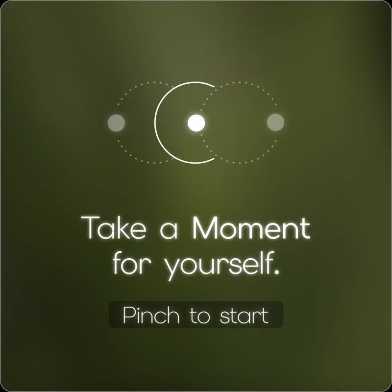
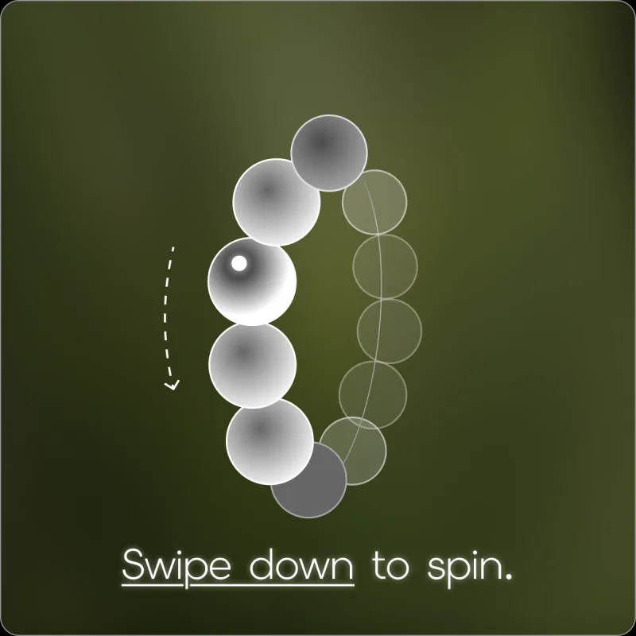
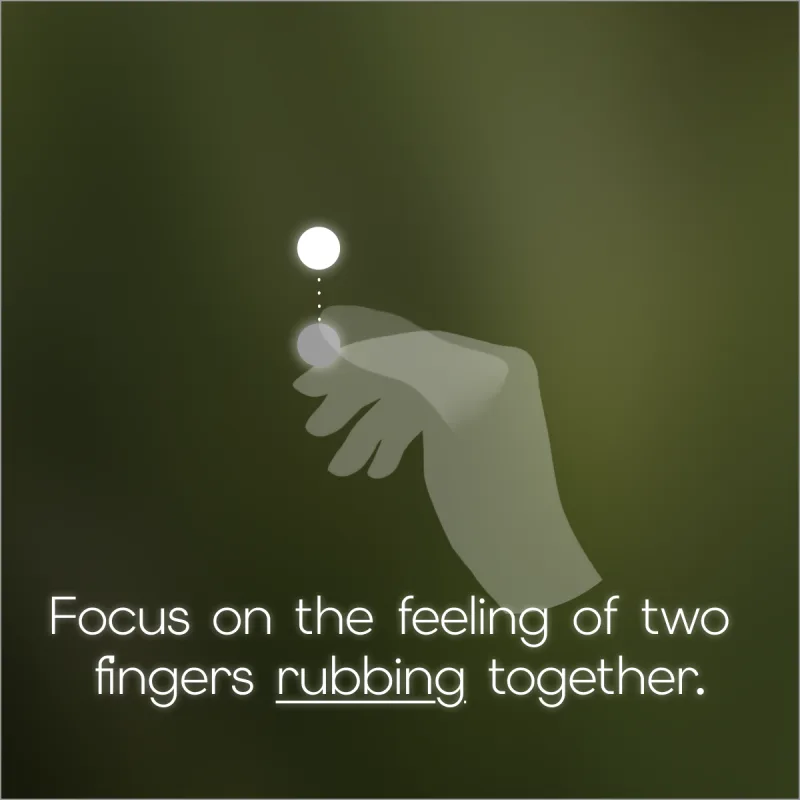
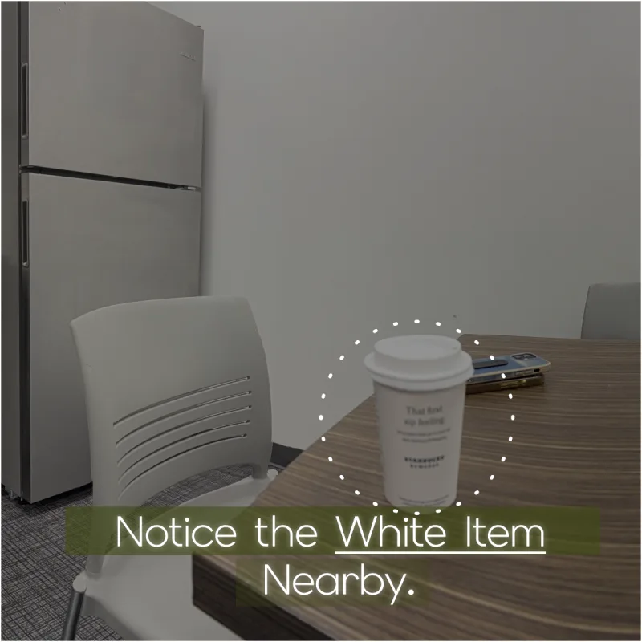
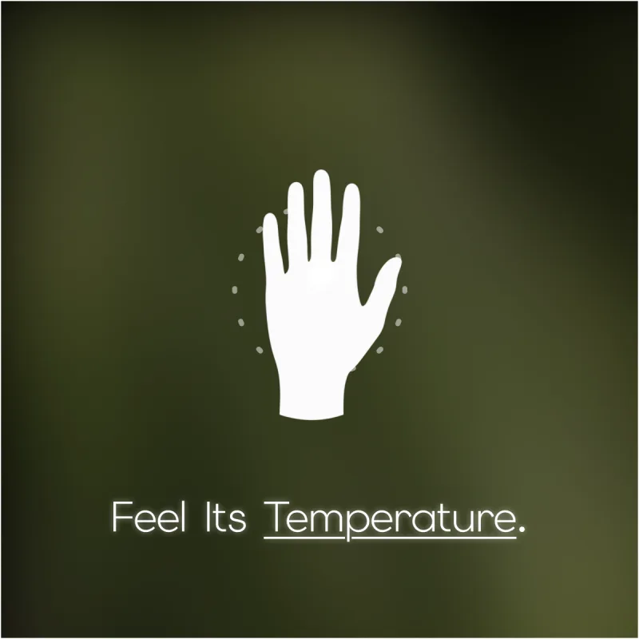
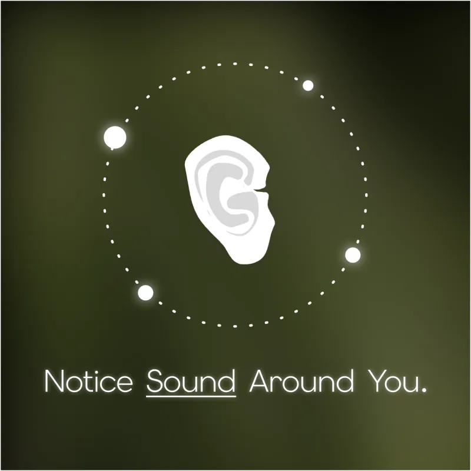
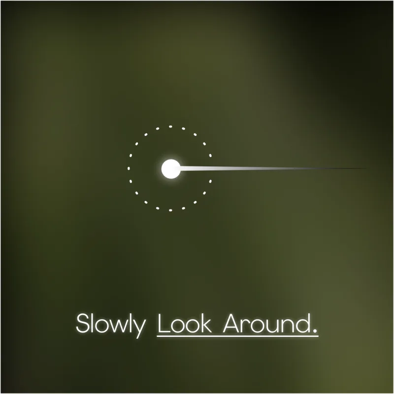
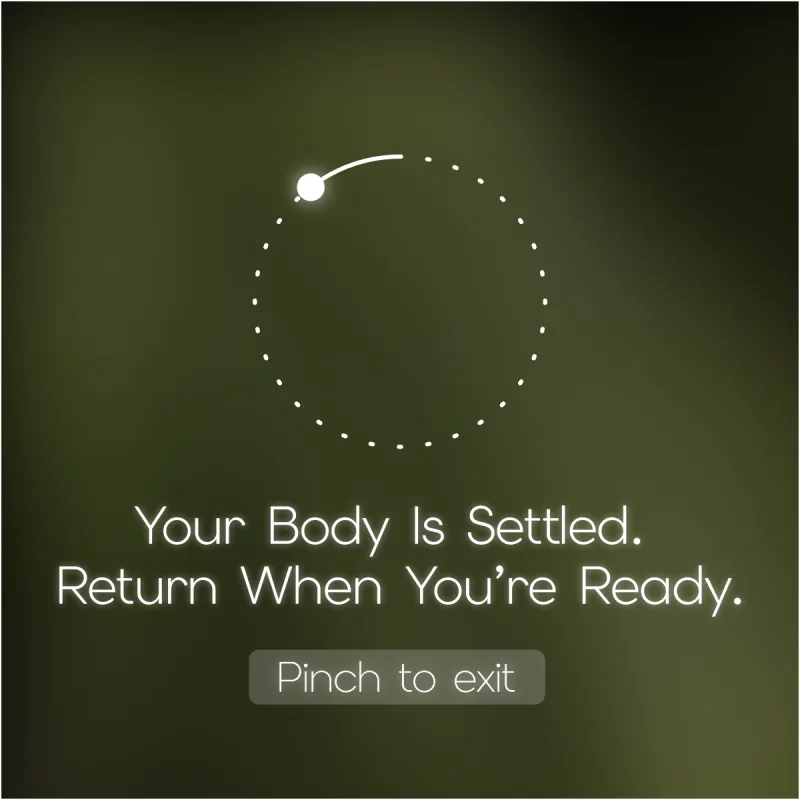
A pinch on the Neural Band starts a three-minute reset.
Motion sensing notices you are still standing, and asks you to sit first.
Weight goes into the chair, and the body learns it is safe.
The ring grows and shrinks to pace each breath.
Each bead is one slow breath. The swipe gives the hands a rhythm too.
Touch pulls attention back into the body fastest.
The camera takes one snapshot of the room, with your permission.
MOMO picks one real object to anchor you. No names, no faces.
A warm cup in your hand becomes the next grounding step.
Hearing brings back the room beyond the object.
Widen the view again, at your own pace.
Return when you are ready. Pinch to exit.
How it works
Four quiet signals, no screen to unlock.
Nobody nearby should notice. Support starts with a word or a pinch, and the glasses do the sensing.
Privacy by design
Come back to the room, not to the people in it.
A camera on your face is a lot to ask. So the grounding step takes as little as it can, and lets go of it straight away.
-
01 · Asks first
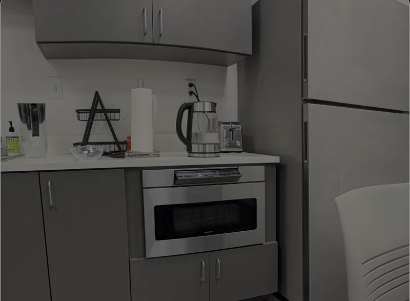
1 snapshotOnly inside a reset you started
The camera looks once, and only with your permission.
-
02 · Objects only

A thing, never a person
MOMO looks for one object or colour. No faces, no names.
-
Notice the white item nearby.03 · One prompt
Turned into a single line
All that survives is the instruction in your lens.
-
04 · Nothing kept
Then the snapshot is gone
No photo saved, no log of where you were.
Make it yours
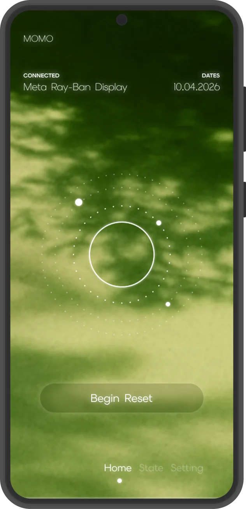
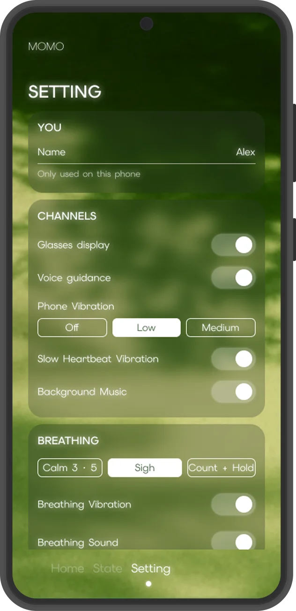
Decide on a calm day, not in the moment.
The companion app is where the choices live: which channels to use (glasses display, voice, phone vibration, a slow heartbeat), and which breathing pattern feels right. Then, mid-panic, there is nothing left to decide.
The film
Outside, noise. Inside, one moment.
Next project
Zen Bloom
View case study